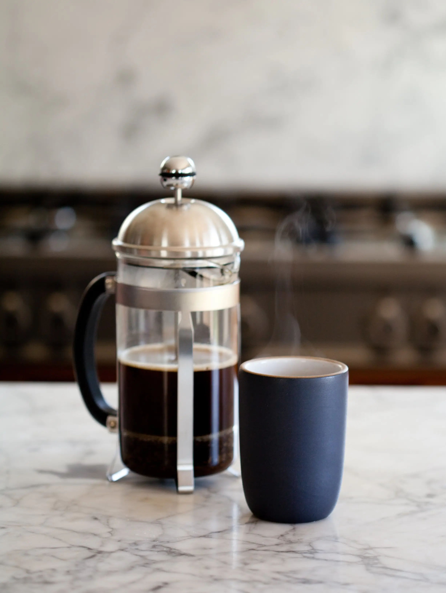

How to make French Press Coffee

The Art of the Press
The french press is the quintessential coffee recipe for the wise man. It affords the opportunity for expression, experimentation, and most importantly, perfection.
First thing's first, you need to prepare your ingredients and apparatus:
INGREDIENTS
- French Press
- Jamaican Blue Mountain Whole Bean Coffee
- Kitchen Scale
- Kettle
- Wooden Spoon
- Burr Grinder
- Timer
STEPS
- Grind Coffee Beans
- Measure out coffee at 17:1 ratio of grams of water per gram of coffee
- Deposit coffee into french press
- Boil water
- Gently pour water over the grounds until the press is about 3/4 full
- Let sit for 30 seconds
- Break up crust with wooden spoon
- Fill press the rest of the way with water
- Let brew for 9 minutes
- Depress plunger
- Serve